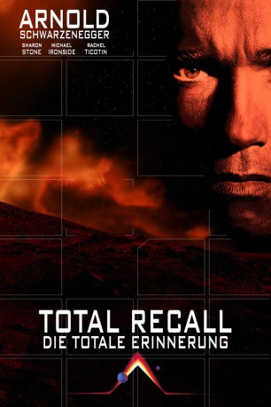
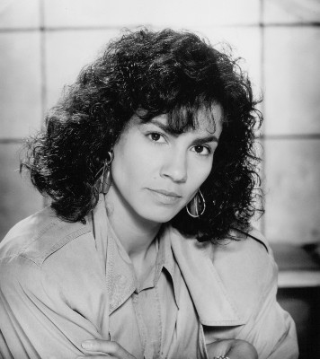
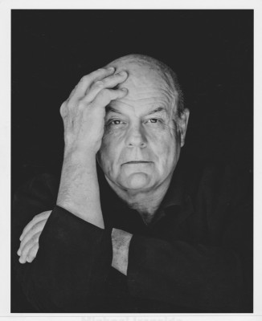
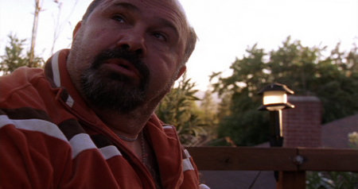
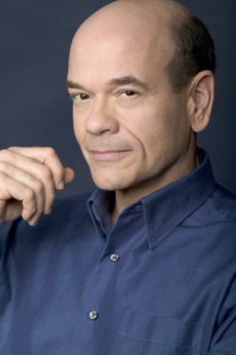
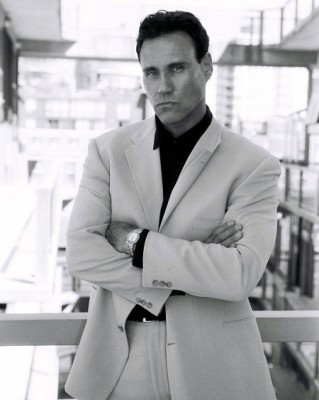
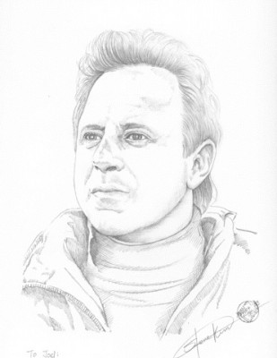

#304 Total Recall - Die totale Erinnerung
Auszeichnungen: 1 Oscars gewonnen für 2 Oscars nominiert
 
 IMDB-Wertung: 7.5 / 10
IMDB-Wertung: 7.5 / 10  Metascore: 57
Metascore: 57 
In ferner Zukunft führt Bauarbeiter Douglas Quaid ein zufriedenes Leben mit seiner attraktiven Ehefrau Lori. Einzig seine immer wiederkehrenden Albträume vom Planeten Mars quälen ihn und so entschließt er sich zu einer virtuellen Reise auf den Roten Planeten. Doch bei der Erinnerungsimplantation geht etwas schief und Quaids Leben ändert sich radikal. Ist er wirklich derjenige, der er zu sein glaubt? Quaid begibt er sich auf die gefährliche Suche nach seiner wahren Identität.
Jahr: 1990
Dauer: 113 Minuten
FSK: 16
Land: USA Studio: TriStar PicturesTonspuren: DTS - ,
Untertitel:
Auflösung: 1080p (1920×1032) Größe: 13721 MB
Genre: Action, Sci-Fi, Thriller
Regisseur:  Paul Verhoeven
Paul Verhoeven
Drehbuch: Philip K. Dick, Ronald Shusett, Dan O'Bannon, Jon Povill, Ronald Shusett
Soundtrack: Jerry Goldsmith
Darsteller:
 Arnold Schwarzenegger als Douglas Quaid / Hauser
Arnold Schwarzenegger als Douglas Quaid / Hauser-  Rachel Ticotin als Melina
 Sharon Stone als Lori
Sharon Stone als Lori Ronny Cox als Vilos Cohaagen
Ronny Cox als Vilos Cohaagen-  Michael Ironside als Richter
 Marshall Bell als George / Kuato
Marshall Bell als George / Kuato- Mel Johnson Jr. als Benny
- Michael Champion als Helm
 Ray Baker als Bob McClane
Ray Baker als Bob McClane Rosemary Dunsmore als Dr. Lull
Rosemary Dunsmore als Dr. Lull Dean Norris als Tony
Dean Norris als Tony Debbie Lee Carrington als Thumbelina
Debbie Lee Carrington als Thumbelina- Lycia Naff als Mary
-  Robert Costanzo als Harry
 Marc Alaimo als Everett
Marc Alaimo als Everett Michael Gregory als Rebel Lieutenant
Michael Gregory als Rebel Lieutenant Mickey Jones als Burly Miner
Mickey Jones als Burly Miner- Frank Kopyc als Technician
- Monica Steuer als Mutant Mother
- Sasha Rionda als Mutant Child
-  Robert Picardo als Voice of Johnnycab
- Kamala Lopez als Additional Voices
 Bob Bergen als Additional Voices
Bob Bergen als Additional Voices Joe Unger als Additional Voices
Joe Unger als Additional Voices- Karlyn Michelson als Additional Voices
- Frank Allen Forbes als Vestron Soldier , uncredited
 Allan Graf als Harry's Henchman , uncredited
Allan Graf als Harry's Henchman , uncredited-  Peter Kent als Richter's Subway Agent , uncredited
-  Joel Kramer als Harry's Henchman , uncredited
 Roy Brocksmith als Dr. Edgemar
Roy Brocksmith als Dr. Edgemar- David Knell als Ernie
- Alexia Robinson als Tiffany
- Mark Carlton als Bartender
- Michael LaGuardia als Stevens
- Priscilla Allen als Fat Lady
- Ken Strausbaugh als Immigration Officer
- Ken Gildin als Hotel Clerk
- Parker Whitman als Martian Husband
- Ellen Gollas als Martian Wife
- Gloria Dorson als Woman in Phone Booth
- Erika Carlsson als Miss Lonelyhearts
- Benny Corral als Punk Cabbie
- Bob Tzudiker als Doctor
- Erik Cord als Lab Assistant
- Chuck Sloan als Scientist
- Dave Nicolson als Scientist
- Paula McClure als Newscaster
- Rebecca Ruth als Reporter
- Milt Tarver als Commercial Announcer
 Roger Cudney als Agent
Roger Cudney als Agent
Datei: X:\FSK18-1900-1999\Total Recall - Die totale Erinnerung (1990, FSK16, 1920x1032).mkv seit 16.02.2015
Festplatte: FSK18
 Es gibt insgesamt 108 Filme in der Gruppe 'FSK18-1900-1999'
Es gibt insgesamt 108 Filme in der Gruppe 'FSK18-1900-1999'